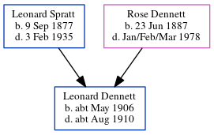

Leonard Muskett S Dennett cMay 1906 - c1910
[ Home ] | [ Calendar ] | [ Surnames Index ] | [ Census Index ] | [ Family History ]The child of Leonard Spratt (an agricultural laborer) and Rose Dennett, Leonard Dennett, the first cousin once-removed on the father's side of Nigel Horne, was born in Thanet, Kent, England c. May 19061,2.
He died in Thanet c. Aug 19102.
Parents
- Leonard was born on Sep 9, 1877
- Rose Ethel Muskett was born on Jun 23, 1887
Citations
- England & Wales births 1837-2006 - Findmypast
- England & Wales deaths 1837-2007 - Findmypast
Media
England & Wales deaths 1837-2007 - BMD/D/1910/3/AZ/000623/071
England & Wales Births 1837-2006 - BMD-B-1906-2-AZ-000161-284
England & Wales deaths 1837-2007 - BMD/D/1910/3/AZ/000175/133
Family Tree
Generated by ged2site. Last updated on Jun 11, 2024